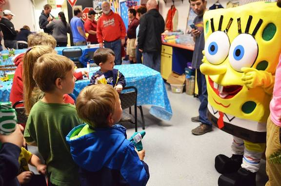

Catering & Parties
The Barking Cow offers a party room for events. This room is partly sectioned off from main seating in order to provide semi private atmosphere. Cakes, pies, and guest characters are available as well!
The Barking Cow also offers catering for events and festivals, including food and ice cream.
For scheduling and questions, please contact Cary Malchow @ 765-717-7667.